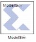

The System Generator Black Box block provides a way to incorporate existing HDL files into a model. When the model is simulated, co-simulation can be used to allow black boxes to participate. The ModelSim HDL co-simulation block configures and controls co-simulation for one or several black boxes.
During a simulation, each ModelSim block spawns one copy of ModelSim, and therefore uses one ModelSim license. If licenses are scarce, several black boxes can share the same block.
Run co-simulation in directory: ModelSim is started in the directory named by this field. The directory is created if necessary. All black box files are copied into this directory, as are the auxiliary files System Generator produces for co-simulation. Existing files are overwritten silently. The directory can be specified as an absolute or relative path. Relative paths are interpreted with respect to the directory in which the Simulink .mdl file resides.
Open waveform viewer: When this checkbox is selected, the ModelSim waveform window opens automatically, displaying a standard set of signals. The signals include all inputs and outputs of all black boxes and all clock and clock enable signals supplied by System Generator. The signal display can be customized with an auxiliary tcl script. To specify the script, select Add Custom Scripts and enter the script name (e.g., myscript.do) in the Script to Run After vsim field. An example showing a customized waveform viewer is included in
<ISE_Design_Suite_tree>/sysgen/examples/black_box/example5. This example is in the topic
Advanced Black Box Example Using ModelSim .
Leave ModelSim open at end of simulation: When this checkbox is selected, the ModelSim session is left open after the Simulink simulation has finished.
Skip compilation (use previous results): When this checkbox is selected, the ModelSim compilation phase is skipped in its entirety for all black boxes that are using the ModelSim block for HDL co-simulation. To select this option is to assert that: (1) underneath the directory in which ModelSim will run, there exists a ModelSim work directory, and (2) that the work directory contains up-to-date ModelSim compilation results for all black box HDL. Selecting this option can greatly reduce the time required to start-up the simulation, however, if it is selected when inappropriate, the simulation can fail to run or run but produce false results.
Include Verilog unisim library: Selecting this checkbox ensures that ModelSim includes the Verilog UniSim library during simulation. Note: the Verilog unisim library must be mapped to UNISIMS_VER in ModelSim. In addition, selecting this checkbox ensures the "glbl.v" module is compiled and invoked during simulation.
Add custom scripts: The term “script” refers to a Tcl macro file (DO file) executed by ModelSim. Selecting this checkbox activates the fields
Script to Run Before Starting Compilation,
Script to Run in Place of "vsim", and
Script to Run after "vsim". The DO file scripts named in these fields are not run unless this checkbox is selected.
Script to run before starting compilation: Enter the name of a Tcl macro file (DO file) that is to be executed by ModelSim before compiling black box HDL files.
Script to run in place of "vsim": ModelSim uses Tcl (tool command language) as the scripting language for controlling and extending the tool. Enter the name of a ModelSim Tcl macro file (DO file) that is to be executed by the ModelSim
do command at the point when System Generator would ordinarily instruct ModelSim to begin a simulation. To start the simulation after the macro file starts executing, you must place a
vsim command inside the macro file.
Normally, if this parameter is left blank, or Add custom scripts is not selected, then System Generator instructs ModelSim to execute the default command
vsim $toplevel -title {System Generator Co-Simulation (from block $blockname} Here
$toplevel is the name of the top level entity for simulation (e.g., work.my_model_mti_block) and
$blockname is the name of the ModelSim block in the Simulink model associated with the current co-simulation. To avoid problems, certain characters in the block name (e.g., newlines) are sanitized.
If this parameter is not blank and Add custom scripts is selected, then System Generator instead instructs ModelSim to execute
do $* $toplevel $blockname. Here
$toplevel and
$blockname are as above and
$* represents the literal text entered in the field. If, for example the literal text is '
foo.do', then ModelSim executes
foo.do. This macro file can then reference
$toplevel and
$blockname as $1 and $2, respectively. Thus, the command
vsim $1 inside of the macro file
foo.do runs vsim on topLevel.
Script to run after "vsim": Enter the name of a Tcl macro file (DO file) that is to be executed by ModelSim after all the HDL for black boxes has been successfully compiled, and after the ModelSim simulation has completed successfully. If the
Open Waveform Viewer checkbox has been selected, System Generator issues all commands it ordinarily uses to open and customize the waveform viewer before running this script. This allows you to customize the waveform viewer as desired (either by adding signals to the default viewer or by creating a fully custom viewer). The black box tutorial includes an example that customizes the waveform viewer.
It is often convenient to use relative paths in a custom script. Relative paths are interpreted with respect to the directory that contains the model's MDL file. A relative path in the Run co-simulation in directory field is also interpreted with respect to the directory that contains the model's MDL file. Thus, for example, if Run co-Simulation in directory specifies ./modelsim as the directory in which ModelSim should run, the relative path ../foo.do in a script definition field refers to a file named foo.do in the directory that contains the .mdl.
The time scale in ModelSim matches that in Simulink, i.e., one second of Simulink simulation time corresponds to one second of ModelSim simulation time. This makes it easy to compare times at which events occur in the two settings. The typically large Simulink time scale is also useful because it allows System Generator to schedule events without running into problems related to the timing characteristics of the HDL model. Users needn't worry too much about the details System Generator event scheduling in co-simulation models. The following example is offered to illustrate the broader points.
This example model shown here can be found in the System Generator directory <ISE_Design_Suite_tree>/sysgen/example/black_box/example4. The example is also discussed in the topic
Importing a Verilog Module .
At the time scale presented here (the above shows a time interval of six seconds), the rising clock edge at three seconds and the corresponding transmission of data through each of the two black boxes appear simultaneous, much as they do in the Simulink simulation. Looking at the model, however, it is clear that the output of the first black box feeds the second black box. Both of the black boxes in this model have combinational feed-throughs, i.e., changes on inputs translate into immediate changes on outputs. Zooming in toward the three second event reveals how System Generator has resolved the dependencies. Note the displayed time interval has shrunk to ~20 ms.
The above figure reveals that System Generator has shifted the rising clock edge so it occurs before the input value is collected from Simulink and presented to the first of the black boxes. It then allows the value to propagate through the first black box and presents the result to the second at a slightly later time. Zooming in still further shows that the HDL model for the first black box includes a propagation delay which System Generator has effectively abstracted away through the use of large time scales. The actual delay through the first black box (exactly1 ns) can be seen in the figure below.
In propagating data through black box components, System Generator allocates 1/ 1000 of the system clock period down to 1us, then shrinks the allocation to 1/100 of the system clock period down to 5ns, and below that threshold resorts to delta-delay stepping, i.e. issuing "run 0 ns" commands to ModelSim. If the HDL includes timing information (e.g,. transport delays) and the Simulink System Period is set too low, then the simulation results will be incorrect. The above model begins to fail when the Simulink system period setting is reduced below 5e-7, which is the point at which System Generator resorts to delta-delay stepping of the black boxes for data propagation.